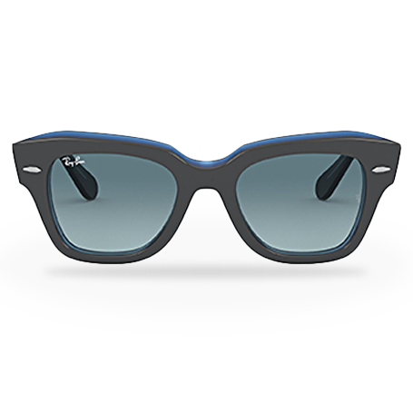

Express your unique personality and find a look that's authentically you.
In the second half of the 1930s and early 1940s, a group of American firms kept developing sunglasses. The military "flying sun glasses (comfort cable)" were standardized in November 1941. They were produced in huge quantities (several million pieces) for pilots and sailors. The lenses were made to a joint standard shared by the U.S. Army Air Corps and the U.S. Navy. As a result, the lens carried an "AN" (Army/Navy) specification number: the AN6531.

